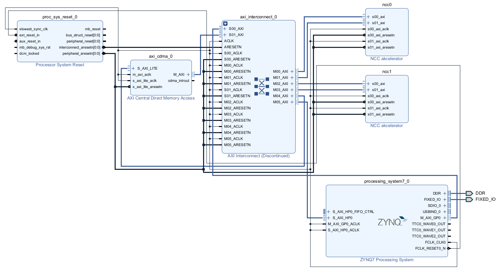

Projekat realizuje hardverski akcelerator za prepoznavanje šahovskih figura sa fotografije table. Slika table dimenzija 720×720 piksela deli se na 64 polja dimenzija 90×90 piksela; za svako neprazno polje računa se normalizovana unakrsna korelacija (engl. Normalized Cross-Correlation, NCC) sa šablonima figura, a iz mape skorova se rekonstruiše pozicija u standardnoj Forsyth-Edwards (FEN) notaciji. Korelacija je, prema profilisanju izvršne specifikacije, uzročnik preko 70 % procesorskog vremena i time prirodan kandidat za akceleraciju u programabilnoj logici.
Dokument prati put od algoritma do implementiranog sistema, u tri celine. Prva (poglavlja 2–6) opisuje algoritam i RT model: matematičku osnovu i tri optimizacije, uklanjanje petlji, interfejs, dijagram algoritamske mašine stanja i podelu na datapath i controlpath. Druga (poglavlje 7) daje analizu samostalnog jezgra posle sinteze i implementacije. Treća (poglavlja 8–10) opisuje put do sistema na ploči: pakovanje jezgra u IP blok sa AXI interfejsom, integraciju sa procesorskim sistemom i DMA kontrolerom, i analizu celog integrisanog dizajna.
Sistem je prethodno modelovan na sistemskom nivou (ESL) u okruženju SystemC/TLM-2.0 i dokumentovan u okviru predmeta Projektovanje elektronskih uređaja na sistemskom nivou. Taj model definiše particionisanje hardvera i softvera, adresnu mapu, registarski interfejs akceleratora i vremenski budžet, i u ovom projektu se koristi kao izvršna specifikacija: RTL model mora dati bit-identičan rezultat.
Iz ESL modela se preuzimaju:
Ciljna platforma je razvojna ploča Digilent Zybo sa uređajem xc7z010clg400-1 (Zynq-7000). Uređaj raspolaže sa 17.600 LUT, 35.200 flip-flopova, 80 DSP48E1 blokova i 60 blokova RAMB36. Ploča nosi 512 MB DDR3 memorije.
Nominalni takt programabilne logike je 100 MHz (period 10 ns) i samostalno jezgro ga ispunjava (odeljak 7.3). U integrisanom sistemu takt je 90,909 MHz, jer PLL procesorskog sistema za traženih 95 MHz daje 1000/11 — odstupanje od nominalnih 100 MHz je 9,1 % (odeljak 10.2).
RT model je opisan u jeziku VHDL-2008 i razvijen ručno iz ASMD dijagrama, ne kroz HLS. Simulacija je izvršena alatom XSim, a sinteza i vremenska analiza alatom Vivado 2025.2.
Akcelerator prima segment slike dimenzija do 90×90 piksela i šablon figure dimenzija do 30×30 piksela, i za svaku poziciju prozora (u, v) računa kvadrat normalizovane unakrsne korelacije. Rezultat je mapa skorova dimenzija (img_w − tmp_w + 1) × (img_h − tmp_h + 1), koju softver zatim pretražuje tražeći maksimum.
Koeficijent korelacije γ u tački (u, v), za segment slike f i šablon t, definisan je izrazom:
gde je f(x,y) intenzitet piksela segmenta, f̄u,v srednja vrednost piksela onog dela slike koji se trenutno preklapa sa šablonom, t piksel šablona, a t̄ srednja vrednost celog šablona. Normalizacija oduzimanjem srednjih vrednosti čini meru neosetljivom na promenu osvetljenja, što je i razlog za izbor NCC-a umesto obične korelacije.
Direktna implementacija ovog izraza je za hardver neprihvatljivo skupa: sadrži kvadratni koren, deljenje po svakoj poziciji prozora i ponovno sumiranje prozora u svakoj tački. Sledeća tri odeljka opisuju tri transformacije kojima se izraz svodi na oblik pogodan za realizaciju u programabilnoj logici, bez gubitka tačnosti.
Rezultat korelacije se ne koristi kao brojna vrednost, već isključivo za poređenje sa pragom detekcije: figura je prepoznata ako je γ > 0,75. Pošto je γ ∈ [−1, 1] i pošto se traži maksimum po apsolutnoj vrednosti, poređenje se ekvivalentno može izvesti nad kvadratom korelacije:
Time kvadratni koren potpuno nestaje iz datapath-a, a izraz koji hardver računa postaje:
gde su diff_f = f(x,y) − f̄ i diff_t = t(x,y) − t̄. Umesto korena i jednog deljenja po tački, ostaju tri akumulacije i jedno deljenje.
Srednja vrednost prozora f̄u,v zavisi od pozicije prozora, pa bi je naivna implementacija računala iznova za svaku poziciju — to je tmp_w × tmp_h sabiranja po svakoj od nekoliko hiljada pozicija. Umesto toga, jednom po segmentu se gradi integralna slika (engl. summed-area table, SAT), u kojoj svaki element sadrži sumu svih piksela iznad i levo od sebe:
SAT[y+1][x+1] = SAT[y][x+1] + row_sum(y, 0..x)
Suma proizvoljnog pravougaonog prozora tada se dobija u konstantnom vremenu, sa četiri pristupa memoriji:
Složenost pripreme je O(img_w × img_h) i plaća se jednom po segmentu, dok se trošak po prozoru svodi sa O(tmp_w × tmp_h) na O(1). Za realan slučaj (segment 90×90, šablon 30×30) to je razlika između 900 i 4 sabiranja po svakoj od 3.721 pozicija.
Rezultat po poziciji prozora je razlomak iz opsega [0, 1], koji se prenosi kao 32-bitna neoznačena vrednost u formatu Q1.31 (vrednost 1,0 odgovara heksadecimalnom 0x80000000). ESL model je ovo računao u pokretnom zarezu, uz zaštitnu granicu if (ncc2 > 1.0) ncc2 = 1.0 koja je bila potrebna zbog grešaka zaokruživanja tipa double.
RT model umesto toga izvodi tačnu celobrojnu podelu u proširenom registru:
gde su num_sq i den_prod 52-bitne veličine, pa se deljenik računa u 83 bita. Pošto se ne koristi aritmetika u pokretnom zarezu, greška zaokruživanja ne postoji, a Cauchy-Schwarz-ova nejednakost garantuje num_sq ≤ den_prod egzaktno — zaštitna granica iz ESL modela matematički otpada i nije implementirana. Degenerisani slučaj konstantnog prozora ili konstantnog šablona (nulta varijansa, deljenje nulom) obrađuje se eksplicitno: rezultat je tada 0.
Širine svih signala u datapath-u realizovane su u paketu
ncc_pkg.vhd. Tabela 1 daje njihov pregled.
| Veličina | Bita | Tip u ncc_pkg.vhd |
|---|---|---|
| piksel slike / šablona | 8 | pixel_t — unsigned(7 downto 0) |
| dimenzije img_w/h, tmp_w/h | 8 | dim_t — unsigned(7 downto 0) |
| f̄, template_mean | 8 | mean_t — unsigned(7 downto 0) |
| diff_f, diff_t | 9 | diff_t — signed(8 downto 0) |
| sum_num | 27 | numacc_t — signed(26 downto 0) |
| sum_den_f, sum_den_t | 26 | denacc_t — unsigned(25 downto 0) |
| num_sq, den_prod | 52 | sq52_t — unsigned(51 downto 0) |
| rezultat (Q1.31) | 32 | result_t — unsigned(31 downto 0) |
| akumulator integralne slike | 32 | sat_t — unsigned(31 downto 0) |
diff_f, diff_t i sum_num su namerno označeni tipovi: razlika piksela i srednje vrednosti je negativna kad god je piksel tamniji od proseka, a suma proizvoda tih razlika prati taj predznak. Zato ove veličine moraju biti signed, ne unsigned; broj bita (9 i 27) ostaje određen samo opsegom vrednosti.
Ceo datapath je zbog toga celobrojan. Srednje vrednosti f̄ i t̄ se zaokružuju na ceo broj pre oduzimanja (deljenje sa zaokruživanjem: (suma + count/2) / count), pa su diff_f i diff_t egzaktni celi brojevi — kroz desetine hiljada sabiranja u akumulatorima ne ulazi nikakva greška zaokruživanja. Jedina veličina u formatu sa fiksnim zarezom je konačni rezultat.
Dimenzije tmp_w i tmp_h su parametri koji se zadaju u vreme izvršavanja, preko komandnih registara, a ne konstante u vreme prevođenja. To je neophodno jer se šabloni figura razlikuju: top je 25×15, dok su kraljica i kralj do 30×30. Konstante MAX_IMG_W = MAX_IMG_H = 90 i MAX_TMP_W = MAX_TMP_H = 30 predstavljaju samo gornju granicu za dimenzionisanje memorija, a ne pretpostavku o fiksnoj veličini.
Ista fleksibilnost omogućava i grubi prolaz coarse-to-fine algoritma na sistemskom nivou (segment 45×45, šablon 15×15), pri čemu samo jezgro ne mora ništa da zna o toj strategiji — ono obrađuje dimenzije koje mu se zadaju.
ASMD dijagram ne poznaje konstrukte for i while: svaka petlja mora biti prevedena u oblik if–goto, u kome brojači petlji postaju registri, a telo petlje jedno ili više stanja. U algoritmu postoje tri mesta sa petljama i ukupno četiri brojača.
Pre transformacije, dvostruka for petlja:
for (y = 0; y < img_h; y++) {
row_sum = 0;
for (x = 0; x < img_w; x++) {
row_sum = row_sum + image[y*img_w + x];
SAT[(y+1)*(img_w+1) + (x+1)] = SAT[y*(img_w+1) + (x+1)] + row_sum;
}
}
Posle transformacije, dva brojača (y i x) postaju registri, a telo petlje stanja s oznakom if–goto:
y = 0
L1: if (y >= img_h) goto L1_END
row_sum = 0
x = 0
L2: if (x >= img_w) goto L2_END
row_sum = row_sum + image[y*img_w + x]
SAT[(y+1)*(img_w+1) + (x+1)] = SAT[y*(img_w+1) + (x+1)] + row_sum
x = x + 1
goto L2
L2_END:
y = y + 1
goto L1
L1_END:
Pre transformacije:
sum_t = 0;
for (p = 0; p < tmp_w*tmp_h; p++)
sum_t = sum_t + templ[p];
template_mean = (sum_t + count/2) / count;
Posle transformacije, jedan brojač p kao linearni indeks kroz šablon:
p = 0; sum_t = 0
L3: if (p >= tmp_w*tmp_h) goto L3_END
sum_t = sum_t + templ[p]
p = p + 1
goto L3
L3_END:
template_mean = (sum_t + count/2) / count
Četiri ugnježdena nivoa: spoljni par (v, u) prolazi kroz pozicije prozora, unutrašnji par (y, x) kroz piksele šablona. Brojači y i x su isti registri kao u odeljku 3.1 — dve faze nisu istovremeno aktivne, pa se resurs deli.
Pre transformacije, četiri ugnježdene for petlje:
for (v = 0; v < res_h; v++) {
for (u = 0; u < res_w; u++) {
sum_f = SAT[(v+th)*(iw+1)+(u+tw)] - SAT[v*(iw+1)+(u+tw)]
- SAT[(v+th)*(iw+1)+u] + SAT[v*(iw+1)+u];
f_bar = (sum_f + count/2) / count;
sum_num = 0; sum_den_f = 0; sum_den_t = 0;
for (y = 0; y < tmp_h; y++) {
for (x = 0; x < tmp_w; x++) {
diff_f = image[(v+y)*img_w + (u+x)] - f_bar;
diff_t = templ[y*tmp_w + x] - template_mean;
sum_num += diff_f*diff_t;
sum_den_f += diff_f*diff_f;
sum_den_t += diff_t*diff_t;
}
}
if (sum_den_f == 0 or sum_den_t == 0)
result = 0;
else
result = (sum_num*sum_num << 31) / (sum_den_f*sum_den_t);
result_map[v*res_w + u] = result;
}
}
Posle transformacije:
v = 0
L4: if (v >= res_h) goto L4_END
u = 0
L5: if (u >= res_w) goto L5_END
sum_f = SAT[(v+th)*(iw+1)+(u+tw)] - SAT[v*(iw+1)+(u+tw)]
- SAT[(v+th)*(iw+1)+u] + SAT[v*(iw+1)+u]
f_bar = (sum_f + count/2) / count
sum_num = 0; sum_den_f = 0; sum_den_t = 0
y = 0
L6: if (y >= tmp_h) goto L6_END
x = 0
L7: if (x >= tmp_w) goto L7_END
diff_f = image[(v+y)*img_w + (u+x)] - f_bar
diff_t = templ[y*tmp_w + x] - template_mean
sum_num = sum_num + diff_f*diff_t
sum_den_f = sum_den_f + diff_f*diff_f
sum_den_t = sum_den_t + diff_t*diff_t
x = x + 1
goto L7
L7_END:
y = y + 1
goto L6
L6_END:
if (sum_den_f == 0 or sum_den_t == 0)
result = 0
else
result = (sum_num*sum_num << 31) / (sum_den_f*sum_den_t)
result_map[v*res_w + u] = result
u = u + 1
goto L5
L5_END:
v = v + 1
goto L4
L4_END:
RT metodologija zahteva da se za svaki modul definišu četiri grupe signala: komandni, statusni, ulazni podaci i izlazni podaci. Tabela 2 daje njihovo konkretno značenje kod NCC jezgra.
| Interfejs | Realizacija |
|---|---|
| Komandni | Konfiguracioni registri REG_IMG_W/H, REG_TMP_W/H, REG_IMG_ADDR, REG_TMP_ADDR (upisuju se pre pokretanja) i REG_CTRL (upis jedinice pokreće obradu). Na nivou RTL jezgra to su ulazi img_w/h, tmp_w/h i signal start. |
| Statusni | Registar REG_STATUS (0 = zauzet, 1 = završeno); na nivou jezgra izlazi busy i done. |
| Ulazni podaci | Ne prenose se preko porta kao vrednosti, već se čitaju iz memorije preko adresno-podatkovnog para: img_addr_o / img_data_i i templ_addr_o / templ_data_i. |
| Izlazni podaci | Mapa rezultata se upisuje u memoriju preko result_addr_o, result_data_o i result_wr_o; procesor je čita sa offseta ADDR_RESULTS. |
Širina izlaznog porta izvedena je funkcionalno iz širina ulaza: pošto su num_sq i den_prod 52-bitni, a količnik posle skaliranja sa 231 po Cauchy-Schwarz-u nikad ne prelazi 231, rezultat staje u 32 bita bez zasićenja.
| Offset | Registar | Opis | Pristup |
|---|---|---|---|
| 0x00 | REG_IMG_W | širina segmenta slike | U |
| 0x04 | REG_IMG_H | visina segmenta slike | U |
| 0x08 | REG_TMP_W | širina šablona | U |
| 0x0C | REG_TMP_H | visina šablona | U |
| 0x10 | REG_IMG_ADDR | adresa segmenta u deljenoj memoriji | U |
| 0x14 | REG_TMP_ADDR | adresa šablona u deljenoj memoriji | U |
| 0x30 | REG_CTRL | upis vrednosti 1 pokreće obradu | U |
| 0x34 | REG_STATUS | 0 = zauzet, 1 = završeno | Č |
| 0x40 | ADDR_RESULTS | početak mape rezultata (32 bita po poziciji) | Č |
Adresni prostor programabilne logike, definisan još u ESL modelu, je: deljena memorija na 0x4000_0000, prvo NCC jezgro na 0x5000_0000, drugo na 0x5100_0000 i DMA kontroler na 0x6000_0000. Mapa je od početka projektovana tako da odgovara rasporedu adresa opšte namene na Zynq platformi, pa se može preuzeti neizmenjena pri integraciji u blok dizajn.
Tabela iznad opisuje izvršnu specifikaciju, ne konačnu realizaciju. Tri bazne adrese jezgara i DMA kontrolera prenesene su neizmenjene (odeljak 9.2), ali dve stvari se razlikuju, jer je jezgro spakovano kao slave sa internim memorijama a ne kao master:
Stvarni registarski interfejs, sa obrazloženjem oba odstupanja, dat je u odeljku 8.4; puna adresna mapa sistema u odeljku 9.2.
Entitet ncc_core ima interfejs prikazan u Tabeli 4. Adresno-podatkovni
parovi ponašaju se kao sinhroni memorijski port: adresa se postavlja u jednom taktu,
a podatak je validan u narednom.
| Port | Smer | Tip | Značenje |
|---|---|---|---|
| clk, rst | in | std_logic | takt i asinhroni reset |
| start | in | std_logic | pokretanje obrade (jedan takt) |
| busy, done | out | std_logic | status obrade |
| img_w, img_h | in | dim_t | dimenzije segmenta |
| tmp_w, tmp_h | in | dim_t | dimenzije šablona |
| img_addr_o / img_data_i | out / in | integer / pixel_t | čitanje segmenta |
| templ_addr_o / templ_data_i | out / in | integer / pixel_t | čitanje šablona |
| result_addr_o, result_data_o, result_wr_o | out | integer / result_t / std_logic | upis mape rezultata |
Jezgro ne poseduje memorije iz kojih čita: adresu izdaje, a podatak dobija u narednom taktu, kao kod svakog sinhronog memorijskog porta. Ono što se nalazi sa druge strane tog porta je pitanje okruženja, a ne jezgra — i upravo se to okruženje razlikuje između izvršne specifikacije i realizacije:
Za sam RT model to ne menja ništa — portovi jezgra su u oba slučaja identični, i zato je jezgro ušlo u IP blok nepromenjeno. Obrazloženje odluke i njene posledice na registarsku mapu su u odeljku 8.1.
Integralna slika je u oba slučaja izuzetak: ona je interna i privatna za jezgro, jer se u fazi izgradnje čita i piše u svakom taktu i ne bi tolerisala deljeni pristup.
Kontrolna jedinica je Murova mašina stanja sa 23 stanja, opisana u dvoprocesnom stilu: jedan proces sadrži isključivo registre (signal_reg <= signal_next), drugi svu kombinacionu logiku, sa podrazumevanim dodelama na početku i grananjem po case state_reg. Memorija integralne slike izdvojena je u treći, poseban proces. Stanja se prirodno grupišu u pet faza, a sva su — svih 23 — nabrojana u Tabeli 5 i prikazana na ASMD dijagramu (Slike 1a i 1b).
| Faza | Stanja | Broj taktova | Namena |
|---|---|---|---|
| — | S_IDLE | 1 | čekanje na start, preuzimanje dimenzija, računanje res_w/res_h |
| A | S_LOAD_IMG_ADDR, S_LOAD_IMG_DATA |
2 · img_w · img_h | čitanje segmenta piksel po piksel i istovremena izgradnja integralne slike |
| B | S_LOAD_TMPL_ADDR, S_LOAD_TMPL_DATA, S_CALC_MEAN, S_CALC_MEAN_WAIT |
2 · tmp_w · tmp_h + ~20 |
čitanje šablona, sumiranje i deljenje radi dobijanja template_mean |
| C | S_L_V, S_L_U_A, S_L_U_B, S_L_U_C, S_L_U_D, S_L_U_E, S_L_U_WAIT |
6 + ~19 po prozoru |
četiri sekvencijalna čitanja SAT, računanje sum_f i deljenje radi f_bar; nuliranje akumulatora |
| D | S_L_YX_FILL, S_L_YX_RUN, S_L_YX_DRAIN |
tmp_w · tmp_h + 1 po prozoru |
pipeline-ovana akumulacija tri sume nad pikselima šablona |
| D | S_L_YX_DRAIN2 | 1 | Akumulira poslednji registrovani par u sve tri sume (sum_num, sum_den_f, sum_den_t); poništava mac_v. |
| E | S_NCC_SQ | 1 | Provera den = 0; ako nije, registruje num_sq <= sum_num2 i den_prod <= sum_den_f · sum_den_t. |
| E | S_NCC_DIV, S_NCC_WAIT, S_WRITE_RESULT |
~84 po prozoru | Startuje div_ncc nad registrovanim vrednostima: (num_sq << 31) / den_prod; upis rezultata. |
| — | S_DONE | 1 | spuštanje busy, postavljanje done |
Slike 1a i 1b prikazuju ASMD dijagram, u notaciji sa vežbe RT modelovanja (Slika 4.5 udžbeničkih materijala). Zbog veličine je podeljen na dve slike, a pet grana koje ih povezuju obeleženo je krugovima A–E. Oblici imaju sledeće značenje:
Svaki ASM blok ima tačno jedan state blok — on i jeste stanje, i za njega se vezuje ime. Test i uslovni izlazni blokovi su opcioni. Pet stanja nema nijednu bezuslovnu RT operaciju — tri koja čekaju delilac (S_CALC_MEAN_WAIT, S_L_U_WAIT, S_NCC_WAIT), S_IDLE koje čeka start, i S_NCC_SQ gde obe grane vode u različite uslovne izlazne blokove. Kod njih je state blok prazan (crtica), što je tačan iskaz: u tom taktu se ne izvršava nijedna netrivijalna RT operacija bezuslovno.
Trivijalne RT operacije oblika registar ← registar, koje postoje u svakom stanju, se po konvenciji iz vežbe ne crtaju; u HDL modelu ih pokrivaju podrazumevane dodele na početku kombinacionog procesa. Grupisanje u pet faza (A–E, Tabela 5, odeljci 5.2–5.6) je organizaciono, u tekstu — nije deo notacije same slike.
Segment se čita piksel po piksel, a integralna slika se gradi u istom prolazu — nije potrebna zasebna faza. Par stanja postoji zbog kašnjenja sinhrone memorije: u stanju S_LOAD_IMG_ADDR izdaju se adresa piksela i adresa elementa integralne slike iznad tekućeg, a u stanju S_LOAD_IMG_DATA oba podatka su validna, pa se računa nova vrednost row_sum i upisuje novi element integralne slike. Cena faze je dva takta po pikselu, odnosno 16.200 taktova za segment 90×90.
Šablon se čita linearno, po istom obrascu adresa/podatak, uz akumulaciju sume. Po završetku se pokreće sekvencijalni delilac koji računa template_mean = (sum_t + N/2) / N, gde je N = tmp_w · tmp_h. Deljenje sa zaokruživanjem je namerno: zaokružena celobrojna srednja vrednost je preduslov za bit-egzaktan datapath (odeljak 2.5). Ova faza se izvršava jednom po pozivu.
Za svaku poziciju prozora treba pročitati četiri elementa integralne slike. Pošto je integralna slika realizovana kao blok-memorija sa jednim portom, četiri čitanja ne mogu biti istovremena — razložena su u pet stanja (S_L_U_A do S_L_U_E), pri čemu svako stanje izdaje sledeću adresu i istovremeno akumulira podatak koji je stigao po prethodnoj. U petom stanju se, uz poslednji sabirak, pokreće delilac za f_bar i nuliraju sva tri akumulatora, a S_L_U_WAIT čeka rezultat deljenja.
Ovo je unutrašnja petlja i ubedljivo najskuplji deo obrade: izvršava se tmp_w · tmp_h puta po svakoj poziciji prozora, dakle preko 3,3 miliona puta po pozivu za pun segment. Naivna realizacija bi po pikselu trošila dva takta (jedan za adresu, jedan za podatak). Umesto toga, faza je organizovana protočno, u tri stepena: u stanju S_L_YX_RUN se istovremeno izdaje adresa piksela k + 2, registruju razlike df/dt piksela k + 1, i akumulira već registrovani par piksela k (u sum_num, sum_den_f, sum_den_t). Stanje S_L_YX_FILL puni protočnu strukturu (izdaje samo prvu adresu, bez registrovanja i akumulacije), a S_L_YX_DRAIN i S_L_YX_DRAIN2 su prazna za izdavanje adrese — samo dovršavaju registrovanje i akumulaciju piksela koji su već učitani. Slika 2 prikazuje preklapanje.
U stanju S_NCC_SQ se najpre proverava degenerisani slučaj: ako je bilo koja od suma kvadrata jednaka nuli, rezultat je 0 i deljenje se preskače. Inače se registruju num_sq <= sum_num2 i den_prod <= sum_den_f · sum_den_t. Stanje S_NCC_DIV pomera tako registrovan deljenik za 31 mesto ulevo i pokreće 83-bitni delilac nad registrovanim vrednostima. Stanje S_NCC_WAIT čeka njegov signal završetka, a S_WRITE_RESULT upisuje rezultat u mapu i pomera brojače prozora. Kvadriranje je razdvojeno od pokretanja delioca u dva takta u Koraku 8b: putanja od kvadriranja sum_num do 83-bitnog delioca bila je najgora posle rutiranja, pa je presečena registrom.
Registri su identifikovani iz oblika if–goto (poglavlje 3), grupisanjem po odredišnoj promenljivoj. Tabela 6 daje pregled.
| Registar | Širina | Upisuje se u fazi |
|---|---|---|
| img_w, img_h, tmp_w, tmp_h, res_w, res_h | 8 | S_IDLE (na start) |
| y, x — deljeni: izgradnja SAT i unutrašnja petlja | 7 | A i D |
| v, u — pozicija prozora | 7 | C i E |
| p — linearni indeks šablona | 10 | B |
| row_sum, sum_t, sum_f_partial | 32 | A, B, C |
| template_mean, f_bar | 8 | B, C |
| df_reg, dt_reg — registrovane razlike piksel–sredina (MAC stepen 1, Korak 8b) | 9 | D |
| mac_v_reg — validnost stepena 1 (gejtuje akumulaciju u taktu punjenja) | 1 | D |
| sum_num (označen) | 27 | D (akumulator) |
| sum_den_f, sum_den_t | 26 | D (akumulatori) |
| num_sq_reg, den_prod_reg — registrovani ulazi 83-bitnog delioca (Korak 8b) | 52 | E |
| result_q | 32 | E |
| busy, done | 1 | S_IDLE, S_DONE |
Datapath sadrži tri paralelna množača u unutrašnjoj petlji (df_reg · dt_reg, df_reg2, dt_reg2), koji se preslikavaju u DSP48E1 blokove, kao i dva množača van petlje (kvadriranje brojioca i proizvod imenilaca). Deljenje resursa nije primenjeno na tri množača unutrašnje petlje: pošto se ta petlja izvršava milionima puta, serijalizacija bi utrostručila najskuplji deo obrade radi uštede od svega nekoliko DSP blokova, kojih ionako ima dovoljno (odeljak 7.2).
Pet registara iz tabele iznad (df_reg, dt_reg, mac_v_reg, num_sq_reg, den_prod_reg) nisu deo prvobitnog dizajna — uvedeni su u Koraku 8b isključivo radi zatvaranja vremenskih uslova, bez ikakve promene izlaza. Njihova cena je +0,41 % latencije i +110 flip-flopova, a dobitak 2,59 ns vremenske rezerve — zbir doprinosa protočnog stepena u MAC petlji i registra pred deliocem.
Deljenje promenljivim deliocem je najskuplja operacija u datapath-u.
Realizovano je kao zaseban parametrizovan modul seq_divider, po
klasičnom algoritmu sa vraćanjem (engl. restoring division): u svakom taktu se
ostatak pomera za jedno mesto, poredi sa deliocem i po potrebi umanjuje, čime se
dobija jedan bit količnika. Kritična putanja po taktu je time svedena na jedno
oduzimanje i jedno poređenje.
Modul se instancira dva puta, sa različitim parametrom širine:
| Instanca | Širina | Namena | Taktova po deljenju | Poziva po pozivu jezgra |
|---|---|---|---|---|
| div_mean | 18 | template_mean i f_bar | ~19 | 1 + res_w·res_h |
| div_ncc | 83 | NCC2 = (num_sq << 31) / den_prod | ~83 | res_w·res_h |
Instanca div_mean deljena je između dve namene (srednja vrednost šablona i srednja vrednost prozora) jer se te dve operacije nikada ne izvršavaju istovremeno — primer deljenja resursa koje ništa ne košta. Komunikacija sa deliocem je preko rukovanja: kontrolna jedinica postavlja operande i generiše impuls start, zatim čeka signal done u posebnom stanju čekanja.
| Memorija | Veličina | Pristup | Realizacija |
|---|---|---|---|
| segment slike | 90×90 × 8 b | čitanje | spoljna, deljena (procesor / DMA / oba jezgra) |
| šablon | 30×30 × 8 b | čitanje | ista spoljna memorija, druga adresna oblast |
| integralna slika (SAT) | 91×91 × 32 b | čitanje i upis | interna, privatna, blok-memorija |
| mapa rezultata | do 90×90 × 32 b | upis (jezgro), čitanje (procesor) | spoljna, offset ADDR_RESULTS |
Podela je klasična: controlpath je isključivo mašina stanja sa brojačima, koja prema datapath-u šalje upravljačke signale (izbor operanada, dozvole upisa, impulse za pokretanje delilaca), a od njega prima statusne signale (završetak deljenja, nulta varijansa, kraj petlji). Datapath ne sadrži nikakvu odluku o toku izvršavanja.
Radi preglednosti, slika ne iscrtava zasebne blokove za pet protočnih registara iz Koraka 8b (df_reg/dt_reg/mac_v_reg između oduzimača i množača, num_sq_reg/den_prod_reg između kvadriranja i delioca) — oni takt-granicu unose unutar prikazanih putanja, bez promene redosleda blokova ni toka podataka.
Analizirano je samostalno jezgro (fajlovi ncc_pkg.vhd i
ncc_core.vhd); ceo integrisani sistem obrađen je u poglavlju 10.
Sinteza i implementacija su izvedene u alatu Vivado 2025.2, u režimu
out-of-context za uređaj
xc7z010clg400-1, uz pun tok do fizičke optimizacije posle
rutiranja. Sve brojke u ovom poglavlju su post-route. Latencija je izmerena
simulacijom u alatu XSim, brojanjem taktova u kojima je signal
busy aktivan.
Ograničenje takta se čita pre sinteze, jer bi se inače jezgro sintetisalo bez vremenskog cilja. Režim out-of-context (OOC) sintetiše jezgro kao samostalan blok, bez povezivanja njegovih portova na stvarne pinove uređaja — alat tako ne pokušava da smesti I/O bafere za sve signale. To je ovde i nužno, jer golo jezgro ima 118 portova, a paket clg400 nudi samo 100 korisničkih pinova.
| Resurs | Utrošeno | Raspoloživo | Iskorišćenost |
|---|---|---|---|
| Slice LUT (sve kao logika) | 1.472 | 17.600 | 8,36 % |
| Slice registri (FF) | 664 | 35.200 | 1,89 % |
| DSP48E1 | 9 | 80 | 11,25 % |
| Block RAM (RAMB36E1) | 9 | 60 | 15,00 % |
Jezgro zauzima manje od devetine logičkih resursa uređaja.
U integrisanom sistemu jedna instanca nije golo jezgro nego ceo IP ncc_accel — jezgro sa dva AXI kontrolera i memorijskim podsistemom — što po instanci iznosi 1.887 LUT umesto 1.472. Zauzeće celog sistema je 35,4 % LUT-ova (odeljak 10.1).
| Veličina | pri 11,000 ns | pri 10,000 ns |
|---|---|---|
| Zadata frekvencija | 90,909 MHz | 100 MHz |
| Najgora vremenska rezerva (WNS) | +0,387 ns | +0,146 ns |
| Kašnjenje kritične putanje | 10,638 ns (logika 5,719 · rutiranje 4,919) | 9,832 ns (logika 7,901 · rutiranje 1,931) |
| Broj nivoa logike | 16 (9×CARRY4, LUT) | 12 (10×CARRY4, 2×DSP48E1) |
| Krajnjih tačaka koje krše ograničenje | 0 od 1.804 | 0 |
| Maksimalna frekvencija | ~101,5 MHz | |
Samostalno jezgro zatvara i ograničenje od 100 MHz, sa rezervom od 0,146 ns i ostvarivom frekvencijom od približno 101,5 MHz. Nijedna krajnja tačka ne krši ograničenje ni pri jednom od dva perioda.
Navedena su dva merenja zato što alat optimizuje samo do zadatog ograničenja: na 11 ns kritična putanja iznosi 10,638 ns, a na 10 ns svega 9,832 ns, jer je pri strožem cilju kvadriranje mapirano u DSP48E1. Reč je o istom RTL-u u dve različite implementacije, pa se rezerva ne sme aritmetički prevoditi između ograničenja.
Kritična putanja vodi od akumulatora sum_num_reg do registra num_sq_reg, kroz kvadriranje brojioca. Ona se izvršava jednom po poziciji prozora, a ne u unutrašnjoj petlji, pa je presek registrom na tom mestu koštao svega jedan takt po prozoru.
Rezultat je posledica odluke da se sva tri deljenja izvode sekvencijalno, jedan bit količnika po taktu. Kombinaciono deljenje promenljivim deliocem davalo bi rezervu od približno −46 ns, dakle kolo ne bi radilo ni na 20 MHz.
Latencija je izmerena na stvarnim podacima: segment 90×90 (polje a8 šahovske table) i šablon crnog topa 25×15, što daje mapu rezultata 66×76, odnosno 5.016 pozicija prozora.
| Veličina | Vrednost |
|---|---|
| Latencija po pozivu (izmereno) | 2.461.201 taktova |
| Broj obrađenih pozicija prozora | 5.016 |
| Taktova po piksel-operaciji | 1,31 |
| Vreme po pozivu pri 100 MHz | 24,61 ms |
| → propusnost | ~203.800 pozicija/s (4,91 µs po poziciji) |
| Vreme po pozivu pri 90,909 MHz | 27,07 ms |
| → propusnost | ~185.300 pozicija/s (5,40 µs po poziciji) |
Latencija u taktovima je svojstvo dizajna i ne zavisi od takta, pa su navedene obe frekvencije: 24,61 ms je ono što jezgro može samo, a 27,07 ms ono što integrisani sistem stvarno radi na 90,909 MHz (odeljak 10.3).
Izmerena latencija se poklapa sa analitičkim modelom. Trošak po poziciji prozora iznosi:
Sabirak 112 čine čitanje integralne slike, deljenje pri računanju f_bar, punjenje i pražnjenje protočne strukture, registrovanje međurezultata, 83-bitno deljenje i upis rezultata. Za šablon 25×15 model predviđa 2.459.761 takt, a izmereno je 2.461.201 — odstupanje od 0,06 %. Model se zato može koristiti za predviđanje latencije pri drugim veličinama zadatka.
| Faza | Model | Taktova | Udeo |
|---|---|---|---|
| A — učitavanje slike i izgradnja SAT | 2·img_w·img_h = 2·90·90 | 16.200 | 0,7 % |
| B — učitavanje šablona i njegova srednja vrednost | 2·N + 19 (N = 375) | 769 | < 0,1 % |
| C, D, E — glavna petlja | res_w·res_h·(N+112) = 66·76·487 | 2.442.792 | 99,3 % |
| ostatak (prelazi S_L_V, zaokruženja modela) | — | 1.440 | 0,1 % |
| Ukupno (izmereno) | — | 2.461.201 | 100 % |
Glavna petlja nosi 99,3 % vremena, što potvrđuje da je baš njenu protočnost trebalo najviše ubrzati.
Ispravnost je proverena na dva nivoa — nad golim jezgrom i nad spakovanim IP-om kroz AXI. Svi testovi porede rezultat sa referentnim modelom u jeziku C, koji je nezavisno proveren nad celom tablom: 32 od 32 figure ispravno prepoznate.
Poređenje između dva nivoa je samo po sebi rezultat: IP daje bit-identičan izlaz kao golo jezgro, čime je pokazano da AXI omotač ne unosi izmenu u obradu.
| Test | Podaci | Očekivano | Ishod |
|---|---|---|---|
ncc_core_tb |
sintetički segment 4×4, šablon 2×2 | svih 9 pozicija prozora bit-identično referentnom modelu, uključujući oba ekstrema (0x00000000 i 0x80000000) | prolazi (9 / 9) |
ncc_core_real_tb |
stvarni segment 90×90 (polje a8) i šablon crnog topa 25×15 | maksimum 0x80000000 na poziciji (u = 32, v = 14) | prolazi (0x80000000 @ 32,14) |
ncc_accel_tb |
isti stvarni podaci, ali upisani i pročitani kroz AXI (Lite za registre, Full za memorije) | isti maksimum, na linearnom indeksu 956 — dokaz da je omotač transparentan | prolazi (0x80000000 @ idx 956) |
ncc_accel_burst_tb |
AXI burst dužine 8 (awlen/arlen = 7), provera WSTRB i ranog AW | svih 8 beat-ova ispravno u oba smera; upis sa isključenim bajt-lane-om ne menja piksel | prolazi (8 / 8 čitanje i upis) |
Da bi jezgro postalo upotrebljivo u alatu za integraciju blokova, mora dobiti standardni interfejs. Od dva uobičajena obrasca — akcelerator kao master koji sam čita deljenu memoriju, ili kao slave sa sopstvenim internim memorijama — izabran je drugi.
Master interfejs bi zahtevao novu mašinu stanja za adresiranje i rukovanje odgovorima. Slave obrazac ne dira jezgro: ncc_core ulazi u omotač nepromenjen. Cena je što se segment slike i šablon moraju preneti u interne memorije pre svakog poziva — u izmerenom radu na ploči to iznosi oko 10,5 % ukupnog vremena (odeljak 10.3).
Time se odstupa od sistemskog modela, koji pretpostavlja deljenu blok-memoriju na adresi 0x4000_0000. U slave obrascu te memorije nema, pa registri REG_IMG_ADDR i REG_TMP_ADDR postaju rezervisani — zadržani su u mapi da adrese ostalih registara ostanu nepromenjene.
Blok izlaže dva odvojena slave interfejsa, jer se saobraćaj deli na nekoliko kratkih pristupa registrima i na masovni prenos piksela.
| Interfejs | Tip | Širina adrese | Opseg | Uloga |
|---|---|---|---|---|
| S00_AXI | AXI4-Lite | 6 bita | 4 KB | kontrolni i statusni registri |
| S01_AXI | AXI4-Full | 17 bita | 128 KB | interne memorije: slika, šablon, rezultat |
Za registre je AXI4-Lite dovoljan. Za memorije je uzet pun AXI4 zbog burst prenosa — bez njih bi DMA izdavao po jednu transakciju na svaku reč. Sam IP i interkonekt podržavaju burst (dokazano testom ncc_accel_burst_tb, dužina 8), ali se u trenutnoj aplikaciji na ploči ne koriste: DMA je isključen (odeljak 10.3), pa prenose radi procesor, reč po reč.
Širina adrese na interfejsu S01 mora biti tačno 17 bita, jer je toliko širok port ka memorijskom podsistemu. Čarobnjak za pakovanje ume tu vrednost tiho da vrati na podrazumevanu (10 bita), pa je u kod dodata provera koja zaustavi sintezu ako širina nije 17 — bez nje bi IP samo prekrio dva od tri memorijska regiona, bez ijedne greške pri prevođenju.
Sve tri memorije dele isti AXI interfejs i razlikuju se po gornja dva bita adrese. Dekodovanje je čisto kombinaciono: region = addr(16:15), indeks reči = addr(14:2).
| Region | addr(16:15) | offset | Sadržaj | Organizacija |
|---|---|---|---|---|
| Slika | 00 | +0x00000 | pikseli segmenta | 8 bita × 8.192 |
| Šablon | 01 | +0x08000 | pikseli šablona | 8 bita × 1.024 |
| Rezultat | 10 | +0x10000 | NCC2 u formatu Q1.31 | 32 bita × 8.192 |
Jedan piksel zauzima celu 32-bitnu reč, iako mu je dovoljan bajt. Time procesor i DMA pristupaju svim regionima na isti način, bez pakovanja bajtova. Cena je četiri puta veći prenos kroz magistralu, ali prenos nije usko grlo (odeljak 10.3). Regioni su poravnati na 32 KB, a najduži burst je 1 KB, pa nijedan burst ne može preći granicu regiona.
Bazne adrese registara zadržane su identične konstantama sistemskog modela, tako da softver iz prethodne faze projekta radi bez menjanja adresa.
| offset | Registar | Pristup | Značenje |
|---|---|---|---|
| 0x00 | IMG_W | upis/čitanje | širina segmenta slike |
| 0x04 | IMG_H | upis/čitanje | visina segmenta slike |
| 0x08 | TMP_W | upis/čitanje | širina šablona |
| 0x0C | TMP_H | upis/čitanje | visina šablona |
| 0x10 | IMG_ADDR | — | rezervisan (videti 8.1) |
| 0x14 | TMP_ADDR | — | rezervisan (videti 8.1) |
| 0x30 | CTRL | upis | upis vrednosti sa bitom 0 = 1 pokreće obradu |
| 0x34 | STATUS | čitanje | bit 0 = done (pamti se), bit 1 = busy |
CTRL je impuls, ne stanje — jedan upis pokreće jednu obradu; da je stanje, jezgro bi krenulo ponovo čim se obrada završi. STATUS pamti done u bistabilu koji se briše tek na sledeći start, jer bi procesor kratak impuls lako propustio.
Sistem ncc_system čine procesorski sistem Zynq, dve instance akceleratora, DMA kontroler za prenos memorija-memorija i AXI interkonekt koji ih povezuje. Ceo sistem radi na jednom taktu, pa nema prelaza između taktnih domena. BRAM (SAT i interne memorije slike/šablona/rezultata) nije zaseban blok na slici — nalazi se unutar svake ncc_accel instance, u njenom memorijskom podsistemu (odeljak 8.1).
Slika 5 je isti taj sistem onako kako ga prikazuje Vivado, sa svim signalima na granicama blokova. Dijagram nije crtan rukom nego je rezultat skripte create_bd.tcl — svaka veza na slici je posledica jedne naredbe connect_bd_intf_net ili connect_bd_net u toj skripti, pa je sistem reproducibilan iz praznog projekta.

Mapa je fiksirana u skripti koja gradi sistem, a ne prepuštena automatskom dodeljivanju, tako da rekonstrukcija sistema uvek daje iste adrese.
| Master | Slave | Bazna adresa | Opseg |
|---|---|---|---|
| PS M_AXI_GP0 | ncc0.S00_AXI (kontrola) | 0x5000_0000 | 4 KB |
| ncc0.S01_AXI (memorije) | 0x5002_0000 | 128 KB | |
| ncc1.S00_AXI | 0x5100_0000 | 4 KB | |
| ncc1.S01_AXI | 0x5102_0000 | 128 KB | |
| axi_cdma_0.S_AXI_LITE | 0x6000_0000 | 64 KB | |
| DMA M_AXI | PS S_AXI_HP0 (DDR) | 0x0000_0000 | iz PS podešavanja |
| ncc0.S01_AXI | 0x5002_0000 | 128 KB | |
| ncc1.S01_AXI | 0x5102_0000 | 128 KB |
Vidljivost je namerno različita po masteru. DMA ne vidi kontrolne registre, čime se smanjuje šansa da pogrešno programiran prenos upiše nešto u njih; procesor ne vidi DDR kroz programabilnu logiku, jer mu do sopstvene memorije vodi direktan put.
| Konstanta modela | Vrednost | Preslikavanje u hardveru |
|---|---|---|
| ADDR_NCC | 0x5000_0000 | ncc0.S00_AXI — identično |
| ADDR_NCC1 | 0x5100_0000 | ncc1.S00_AXI — identično |
| ADDR_DMA | 0x6000_0000 | axi_cdma_0.S_AXI_LITE — identično |
| ADDR_BRAM | 0x4000_0000 | ne postoji — nema deljene memorije (odeljak 8.1) |
| ADDR_RESULTS | 0x40 | postaje S01 + 0x10000, dakle drugi interfejs |
| REG_IMG_ADDR | 0x10 | rezervisan — bez značenja u slave obrascu |
| REG_TMP_ADDR | 0x14 | rezervisan |
Softver za svako neprazno polje izvršava sledeći niz. Redosled je određen time što su memorije jednostruko baferovane, pa jezgro ne može računati dok se u njega upisuje. Prenose u svim koracima ispod obavlja procesor, reč po reč — DMA kontroler postoji u topologiji (odeljak 9.1), ali se ne koristi (odeljak 10.3).
Skorovi se porede kao neoznačeni brojevi (u32), ne kao int32: 0x80000000 (NCC2 = 1,0) je kao označen broj negativan, pa bi traženje maksimuma odbacilo baš savršeno poklapanje. DMA i procesor ne smeju istovremeno pristupati istom S01 interfejsu. Kod istovremenog čitanja i upisa prioritet ima čitanje — upis tada ode na pogrešnu adresu. Sa jednim procesorom i jednim DMA kanalom to se rešava redosledom u softveru (procesor čeka XAxiCdma_IsBusy); hardver to ne proverava sâm.
| Resurs | Utrošeno | Raspoloživo | Iskorišćenost |
|---|---|---|---|
| Slice LUT | 6.225 | 17.600 | 35,37 % |
| Slice registri (FF) | 5.020 | 35.200 | 14,26 % |
| Block RAM (ukupno) | 39 | 60 | 65,00 % |
| DSP48E1 | 18 | 80 | 22,50 % |
| Blok | LUT | FF | RAMB36 | DSP |
|---|---|---|---|---|
| ncc0 (ceo IP) | 1.887 | 1.238 | 19 | 9 |
| ncc1 (ceo IP) | 1.887 | 1.238 | 19 | 9 |
| axi_interconnect_0 | 1.622 | — | — | — |
| axi_cdma_0 | 811 | — | — | — |
Po instanci je 1.887 LUT, a golo jezgro troši 1.472 (odeljak 7.2); razlika od 415 LUT je cena standardnog interfejsa. Interkonekt i DMA zajedno troše 2.433 LUT.
Blok-memorija je najveće zauzeće i slabost ovog rešenja. Sa 65 % je to jedini resurs bez velike rezerve. Uzrok je 32-bitna reč integralne slike, kod koje je dovoljan 21 bit, jer je najveća moguća suma 90 · 90 · 255 = 2.065.500. Sužavanje bi oslobodilo oko šest blokova i spustilo zauzeće na približno 55 %. Nije izvedeno jer memorija nije usko grlo, ali je to prva mera ako se doda treća instanca.
| Veličina | Vrednost |
|---|---|
| Radni takt | 90,909 MHz (period 11,000 ns) |
| Najgora vremenska rezerva (WNS) | +0,268 ns |
| Najgora rezerva za zadržavanje (WHS) | +0,039 ns |
| Krajnjih tačaka koje krše ograničenje | 0 od 15.458 |
| Kritična putanja | ncc0/core_inst/v_reg[2] → ncc0/ms_inst/img_mem/ADDRBWRADDR[14] |
Sistem zatvara vremenska ograničenja na 90,909 MHz, sa pozitivnom rezervom i za postavljanje i za zadržavanje, i bez ijedne krajnje tačke koja krši ograničenje.
Traženo je 95 MHz, a PLL procesorskog sistema deli ulaznu frekvenciju celim brojem, pa je najbliža ostvariva vrednost 1000/11 = 90,909 MHz. Odstupanje od nominalnih 100 MHz iznosi 9,1 %, dakle unutar granice od 20 %.
| Ograničenje | WNS | Krajnjih tačaka krši | Takt |
|---|---|---|---|
| 11,0 ns (radna tačka) | +0,268 ns | 0 od 15.458 | 90,909 MHz |
| 10,0 ns | +0,032 ns | 0 od 15.494 | 100 MHz |
Kontrolno merenje pokazuje da sistem zatvara i 100 MHz. Radna tačka je ipak zadržana na 90,909 MHz zato što su sva merenja propusnosti izvedena na njoj i zato što je rezerva tamo znatno veća. Izbor niže frekvencije je dakle odluka, a ne tehnička nužnost.
Vezujuća putanja zavisi od ograničenja: na 11 ns to je adresna putanja do memorije slike, a na 10 ns kvadriranje brojioca pred deliocem — ista putanja koja je kritična i u samostalnom jezgru (odeljak 7.3). Ograničenje je dakle jezgro, a ne integracija: njena cena je razlika između +0,146 ns samostalno i +0,032 ns u sistemu, oko 0,11 ns.
Ceo tok — učitavanje slike table, petlja 8×8, gruba pretraga, fina potvrda i generisanje FEN notacije — izvršen je na hardveru. Rezultat je bit-identičan referentnom modelu: 32 od 32 polja prepoznata, FEN znak po znak jednak zvaničnom.
| Faza | Vreme | Udeo |
|---|---|---|
| računanje (čekanje jezgra) | 1.555 ms | 87,3 % |
| upis u S01 | 120 ms | 6,7 % |
| čitanje rezultata | 67 ms | 3,8 % |
| obrada na procesoru* | 40 ms | 2,2 % |
| ukupno | 1.782 ms | 100 % |
* 2× smanjivanje segmenta, isecanje segmenta iz slike table i provera praznog polja — sve bez učešća programabilne logike.
Merenje potvrđuje model latencije: model predviđa oko 1.680 ms računanja za 32 polja, pod pretpostavkom da svako polje ima najveći mogući broj kandidata (grubi i fini prolaz). Izmereno je manje, 1.555 ms, jer prazna polja preskaču obradu, a većina zauzetih polja ima svega jedan ili dva kandidata za tip figure, ne maksimalan broj. Obrada iste slike u referentnom rešenju traje 3,667 s, a na ploči je izmereno 1,782 s — 2,06× brže, uz identičan rezultat.
Prenose u izmerenom toku obavlja procesor, a ne DMA. Razlog je proveren direktno preko JTAG-a, van naše aplikacije: axi_cdma ne uspeva da izvrši prenos duži od dva takta magistrale kroz axi_interconnect_0, konfigurisan kao deljena magistrala (STRATEGY=1) — treći i četvrti beat jednostavno zaglave. Zato prenose radi procesor, reč po reč; iz tabele se vidi da to košta najviše oko 10,5 % ukupnog vremena, jer računanje ionako čini 87 %.
Model latencije omogućava da se izmereno vreme preračuna na drugu veličinu zadatka:
| Veličina zadatka | Taktova | Vreme | Izvor |
|---|---|---|---|
| segment 90×90, šablon 25×15 | 2.461.201 | 27,07 ms | izmereno simulacijom |
| segment 90×90, šablon 30×30 | 3.783.652 | 41,6 ms | iz modela |
Pošto u sistemu rade dve instance paralelno, sistem obrađuje dva polja table u vremenu u kome bi jedna instanca obradila jedno.
| Veličina | Referentno rešenje | Ovaj rad |
|---|---|---|
| LUT po instanci | 5.269 | 1.887 |
| DSP po instanci | 16 | 9 |
| Blok-memorija po instanci | 4 manja bloka | 19 većih ← slabije |
| LUT za dve instance | 10.538 (59,9 %) | ceo sistem 6.225 (35,4 %) |
| Taktova za 90×90 / 30×30 | 10.360.183 | 3.783.652 |
Ceo sistem — dve instance, interkonekt i DMA zajedno — staje u manje LUT-ova nego što referentno rešenje troši samo na svoja dva jezgra. Po broju taktova na istom zadatku razlika je 2,74×. Jedina veličina po kojoj je ovo rešenje slabije je blok-memorija, sa uzrokom navedenim u odeljku 10.1.
RT model NCC jezgra je opisan u VHDL-u, funkcionalno verifikovan, sintetizovan i implementiran za uređaj xc7z010clg400-1, zatim spakovan u IP blok sa dva AXI interfejsa i integrisan u sistem sa procesorskim sistemom Zynq, drugom instancom akceleratora i DMA kontrolerom. Ključni rezultati:
Slabost se navodi otvoreno: blok-memorija je jedini resurs bez rezerve, sa 65 % zauzeća, i jedina veličina po kojoj je ovo rešenje slabije od referentnog. Uzrok je 32-bitna reč integralne slike kod koje je dovoljan 21 bit; suženje bi zauzeće spustilo na oko 55 % (odeljak 10.1).
Radni takt nije ograničenje: sistem zatvara i 100 MHz (rezerva +0,032 ns). Radna tačka je zadržana na 90,909 MHz zato što su sva merenja izvedena na njoj i zato što je rezerva tamo veća; odstupanje od 9,1 % je unutar dopuštenih 20 % (odeljak 10.2).
Sistem je proveren na realnoj ploči. Konfiguraciona datoteka je generisana, softver prenesen iz izvršne specifikacije, i ceo tok izvršen na hardveru: 32 od 32 polja prepoznata, FEN znak po znak jednak zvaničnom, ukupno 1,782 s naspram 3,667 s referentnog rešenja (odeljak 10.3).